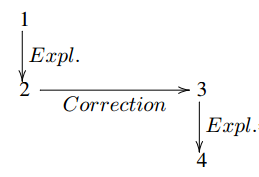
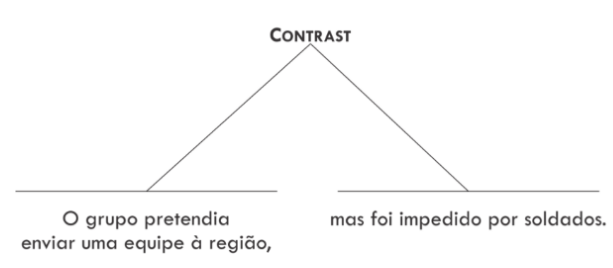
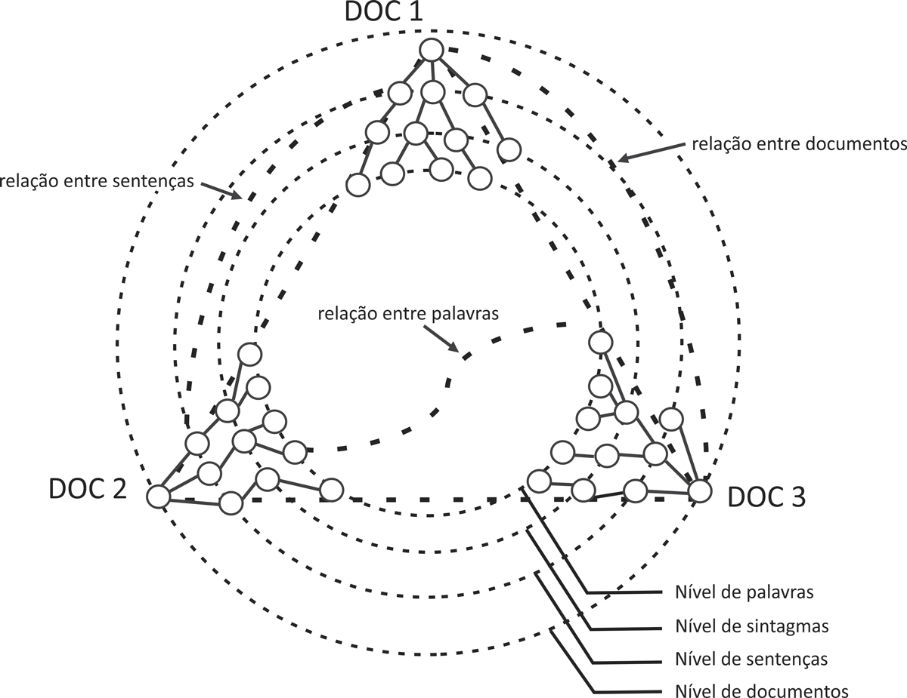

11 Modelos discursivos
11.1 Introdução
No Dicionário Houaiss1, discurso pode referir-se à “língua em ação, tal como é realizada pelo falante; a um segmento contínuo de fala maior do que uma sentença (Análise de discurso); a um enunciado oral ou escrito que supõe, numa situação de comunicação, um locutor e um interlocutor”; e ainda à “reprodução que alguém faz das palavras atribuídas a outra pessoa”. Diante das possibilidades de definir o que é discurso, nos parece pertinente pontuar quais os limites e o objeto de estudo do nível discursivo para a Linguística e, mais especificamente, para o PLN.
Segundo Barros (2021), na Linguística há diferentes perspectivas teórico-metodológicas para o estudo do texto e do discurso, porém todas coincidem no fato de considerarem que a análise discursiva “vai além da dimensão da palavra ou da frase, e se preocupa com a organização global do texto; examina as relações entre a enunciação e o discurso enunciado e entre o discurso enunciado e os fatores sócio-históricos que o constroem”. Salientamos que texto e discurso tendem a ser entendidos como elementos que se complementam. Segundo Lyons (1977), o texto se dá por meio do discurso, em que aquele seria qualquer passagem que apresenta a conexão do discurso, falado ou escrito, em um diálogo ou um monólogo.
Por sua vez, no PLN há uma tendência a definir discurso como “qualquer segmento conexo de texto ou fala, compreendendo uma ou mais frases ou segmento de frases” (Sidner, 1978). Essa parece ser uma definição bastante genérica, mas que conduz as pesquisas da área a tomarem texto e discurso como sinônimos. Diversos estudos discursivos em PLN trabalham com textos de diversos gêneros (como redações escolares, textos jornalísticos ou postagens em redes sociais) e tamanhos variados. Assim, a definição proposta por Sidner (1978) nos parece pertinente por não ter concebido discurso a partir de uma porção encadeada de duas ou mais sentenças, mas a partir da possibilidade de observação de questões que extrapolam os limites da materialidade e que não têm como fator limitante o tamanho. Ainda sob a perspectiva do PLN, Mitkov (2010) enfatiza que o discurso produzido não é uma mera coleção aleatória de símbolos ou palavras, mas se trata de elementos relacionados e significativos que têm um objetivo comunicativo particular.
Sendo assim, podemos afirmar que, em nível discursivo, uma preocupação comum à Linguística e, em especial, aos estudos de PLN está na relação entre os elementos de um texto, podendo-se, de antemão, depreender que a produção de um texto em si pressupõe um processo de interação e de intenções entre os sujeitos envolvidos em uma determinada situação comunicativa. De acordo com Oliveira (2008), podemos organizar as relações textuais em duas grandes áreas: coesão e coerência, que, para a autora, são, na verdade, faces de uma mesma moeda.
Segundo Koch (2003), é possível definir coesão como “o fenômeno que diz respeito ao modo como os elementos linguísticos presentes na superfície textual se encontram interligados entre si, por meio de recursos também linguísticos, formando sequências veiculadoras de sentido”. A autora ainda destaca duas modalidades de coesão2: a remissão (reativação de referentes por anáfora, catáfora ou sinalização) e a sequenciação (elementos responsáveis pelo avanço e a continuidade dos sentidos do texto). Por sua parte, coerência refere-se “ao modo como os elementos subjacentes à superfície textual vêm a construir, na mente dos interlocutores, uma configuração veiculadora de sentidos” (Koch, 2003, p. 52). A coerência resulta da construção feita pelos interlocutores, por isso, embora parta do texto, envolve uma série de fatores de caráter cognitivo, interacional, situacional e sociocultural. A superfície do texto, conforme ressalta Koch (2003, p. 53), “funciona como pistas ou chaves para orientar o interlocutor na construção do sentido”. Pardo (2005, p. 1) explica o fenômeno da coerência textual nos exemplos de Exemplo 11.1:
Exemplo 11.1
a) Embora tenha chovido, as obras continuaram.
b) João não foi à aula, mas estava doente.
Segundo o autor, apenas o trecho (1a) é coerente, por apresentar um sentido global marcado por uma relação de oposição entre as proposições. O trecho (1b), por sua parte, é incoerente, pois “a relação de oposição [marcada nesse caso pela conjunção adversativa mas] contraria a relação decausa que parece mais plausível” (Pardo, 2005). Portanto, é no nível do discurso que um escritor/falante organiza e relaciona as proposições para a produção de um texto com determinados objetivos comunicativos, buscando, assim, satisfazer as suas intenções comunicativas, como persuadir, informar ou pedir algo ao seu leitor/ouvinte.
As relações estabelecidas entre os elementos no interior de um texto para a construção de sentido são bastante complexas, inclusive para a interpretação humana. Por isso, verifica-se a teorização, anotação e o processamento de dados discursivos como grandes desafios para o PLN. Com base nisso, neste capítulo, não temos a pretensão de findar as discussões sobre o nível discursivo; pelo contrário, nosso objetivo é apresentar um panorama sobre modelos discursivos que vêm sendo utilizados em pesquisas nas (sub)áreas de PLN, além de destacarmos tarefas desenvolvidas e consolidadas a partir desses modelos.
Para tanto, este capítulo se organiza da seguinte maneira: na Seção Modelos de relações discursivas, apresentamos fundamentações teóricas gerais sobre modelos de relações discursivas, exemplificando suas preocupações e potenciais aplicações por meio das teorias GSDT, SDRT, Teoria de Centering e Teoria das Veias. Na Subseção O modelo RST (Mann e Thompson, 1988) e na Subseção CST: Cross-document Structure Theory, 2000, em contrapartida, descrevemos com algum aprofundamento dois modelos discursivos bastante relevantes nos estudos de PLN no mundo e no Brasil: a Rhetorical Structure Theory (RST) e a Cross-document Structure Theory (CST). Na Seção Recursos e aplicações para o português brasileiro, apresentamos os principais recursos disponíveis e aplicações em PLN que utilizaram modelos discursivos para sua constituição e/ou realização. Em Considerações Finais (Seção Considerações finais), descrevemos algumas limitações, desafios e conquistas da área.
11.2 Modelos de relações discursivas
Ao longo da exposição desta seção, poderá ficar a impressão de que alguns modelos são mais detalhados que outros. Isso se deve ao fato de que muitos deles não têm sido vastamente utilizados nos últimos anos, especialmente por conta do excelente desempenho que alguns métodos estatísticos e modelagens computacionais recentes vêm apresentando na área de PLN e Inteligência Artificial. Apesar de alguns modelos apresentarem essa questão, eles estão presentes nesta seção devido à aderência a aplicações e desenvolvimento de recursos para o PLN, ou mesmo por terem servido como ponto de partida teórico para outros modelos. Há modelos clássicos que buscam tratar diversos fenômenos discursivos, também nomeados retóricos. A título de exemplo, mencionamos, inicialmente e de maneira concisa, as contribuições da GSDT, SDRT, da Teoria de Centering e da Teoria das Veias.
A teoria de Grosz; Sidner (1986), conhecida como GSDT (Grosz and Sidner Discourse Theory), visa modelar o aspecto intencional do discurso. Parte-se da ideia de que o autor de um texto possui uma ou mais intenções e estrutura seu conteúdo de forma a satisfazê-las. Identificar as intenções do autor é crucial para compreender a mensagem pretendida. Como as intenções potenciais em um discurso são praticamente ilimitadas, a GSDT organiza-o usando relações de contribuição e satisfação entre as intenções. Essas relações são em número finito e limitadas a dois tipos: a intenção primária do discurso e as intenções subjacentes aos segmentos do discurso. Define-se, nesta teoria, as seguintes relações: Dominance, Satisfaction-Precedence, Supports e Generates.
A relação Dominance ocorre quando a intenção subjacente a um segmento A contribui para a intenção subjacente de um segmento B, isto é, A dominates B, representado por (DOM(A,B)). A relação Satisfaction-Precedence ocorre quando a intenção subjacente a um segmento A deve ser satisfeita antes da intenção subjacente a um segmento B, isto é, SP(A,B). As relações Supports e Generates ocorrem entre o conteúdo dos segmentos. A primeira acontece se a aceitação de um segmento B fornece subsídios para a aceitação do segmento A, então se diz que o conteúdo de B supports A (SUP(A,B)). A segunda ocorre se a ação descrita em B contribui para a ação descrita em um segmento A (GEN(B,A)). No Exemplo 11.2, extraído de Maziero (2016, p. 14), ilustra-se tais relações.
Exemplo 11.2
a) A teoria XYZ é bem informativa para muitas tarefas de PLN que requerem conhecimento discursivo, e conta com diversos parsers disponíveis.
b) Seu uso, portanto, é uma ótima alternativa quando se deseja automatizar totalmente uma tarefa de PLN.
Segundo Maziero (2016), no exemplo anterior, a intenção do autor do texto é persuadir o leitor que o uso da XYZ é uma ótima alternativa no campo do PLN (2b), argumentando a favor do modelo da primeira sentença. Podemos dizer, portanto, que há uma relação de DOM (2b, 2a) e SUP (2a, 2b). A teoria não visa explicitar qual a intenção do autor do texto, mas estabelece conexões entre as intenções, além de abordar questões como os focos de atenção e a estrutura linguística.
A teoria SDRT (Asher; Lascarides, 2003) – Teoria da Representação do Discurso Segmentado – se interessa em identificar os segmentos discursivos e as relações retóricas entre essas unidades, que podem ser classificadas em dois tipos básicos. Uma análise SDRT abrange todas as etapas do processamento do discurso, incluindo segmentação, identificação de relacionamentos e construção de hierarquias, usando informações semânticas e pragmáticas.
O discurso é representado como um hipergrafo, no qual as arestas são as relações discursivas e os nós representam as Unidades de Discurso Elementar (EDUs) que contém apenas um elemento. O grafo pode ter ainda Unidades de Discurso Complexas (CDUs) que são nós com mais de um elemento simples. As unidades discursivas são conectadas por relações retóricas de coordenação ou de subordinação. As relações de coordenação conectam segmentos do discurso no mesmo nível hierárquico, enquanto as relações de subordinação ligam um segmento do discurso a outro segmento que está um nível hierárquico abaixo. Asher; Vieu (2005) afirmam que essa distinção (no nível do discurso) possui uma motivação intuitiva, na qual certas partes do texto desempenham um papel subordinativo (menos relevante) em relação às demais. É importante ressaltar que o conjunto de relações, sejam de coordenação ou subordinação, não é fechado, pois estudos recentes já apresentam variações do conjunto original (por exemplo, (Muller et al., 2012)).
Esta teoria foi bastante explorada para modelar diálogos, pois permite representar contra-argumentação, um fenômeno pouco tratado em outros modelos discursivos (Afantenos; Asher, 2014; Asher et al., 2016; Badene et al., 2019; Li et al., 2020). Portanto, a teoria SDRT possui mecanismos que podem ser aplicados ao tratamento de diálogos, tais como Question Elaborating, Correction e Question Answer Pair. No Exemplo 11.3, Afantenos; Asher (2014) exemplificam um diálogo:
Exemplo 11.3
a) [Maria irá falhar em seus exames.]\(^{1}\) [Ela não estudou muito.]\(^{2}\)
b) [Não, ela estudou muito.]\(^{3}\) [Agora ela tem até olheiras.]\(^{4}\)
Em (3b), o falante não questiona seu interlocutor sobre sua conclusão (EDU 1), mas expressa discordância em relação à veracidade subjacente àquela conclusão. Isso assume a forma de uma relação de Correction entre a EDU 2 do primeiro falante, em (3a), representando o motivo e o contra-argumento do segundo falante. O falante fornece uma razão adicional para suas crenças por meio de uma relação de Explanation. Na Figura 11.1, tem-se a representação na forma de gráfico para esse diálogo.

Outra preocupação em nível discursivo é a resolução anafórica, elemento fundamental para o estabelecimento das relações de correferência de um texto. A Teoria de Centering (Grosz et al., 1995), foca nas relações existentes entre anáforas e visa estabelecer a coerência nos segmentos discursivos adjacentes ao direcionar a atenção para a escolha de uma expressão referencial (discurso local). O principal objetivo da teoria é prever qual entidade discursiva tem maior importância em determinados segmentos, definindo um conjunto de regras e restrições que ditam as escolhas feitas pelos participantes do discurso, como demonstrado em Exemplo 11.4 e Exemplo 11.5, a seguir, em que a Teoria de Centering fornece meios para tratar essas diferenças.
Exemplo 11.4
a) João foi a sua loja de música favorita para comprar um piano.
b) Ele havia frequentado a loja por vários anos.
c) Estava excitado porque iria finalmente poder comprar um piano.
d) Mas quando chegou, a loja estava fechada.
Exemplo 11.5
(a) João foi a sua loja de música favorita para comprar um piano.
(b) Esta era a loja que João frequentou por vários anos.
(c) Ele estava excitado porque iria finalmente poder comprar um piano.
(d) Ela estava fechada quando João chegou.
Nos exemplos, adaptados de Grosz et al. (1995), tem-se que os dois textos expressam a mesma ideia, mas no Exemplo 11.4 “João” é a unidade central enquanto que no Exemplo 11.5, o foco é alternado entre “João” e a “loja de música”. Percebe-se que as escolhas dos participantes podem variar desde a seleção da estrutura sintática (como em (4d) e (5d) que usam estruturas diferentes para tratar sobre o fato de a loja estar fechada)em até a escolha de expressões referenciais (como o uso de “a loja”, em (4b) e “esta” em (5b) ao tratar do mesmo referente).
Ainda na linha de tratamento de anáforas, há a Teoria das Veias (Veins Theory), proposta por Cristea et al. (1998) , que sugere o estabelecimento de domínios referenciais de acessibilidade para cada unidade discursiva, representado pelas “veias” definidas na RST3. A Teoria das Veias expande as regras de coerência local da Teoria de Centering para abranger a composicionalidade das unidades do discurso (Seno, 2005). A veia de uma unidade é definida como um conjunto de unidades do discurso que podem conter o antecedente de uma anáfora. Para manter a coerência, é fundamental que o antecedente e o termo anafórico estejam presentes no mesmo veio, contribuindo para o discurso global.
No exemplo Exemplo 11.6, extraído de Seno (2005), as unidades 1 e 3 são ditas relevantes. Assim, o antecedente da anáfora “a fábrica” da unidade 4 pode estar presente em uma das unidades 1 e 3. No exemplo, seu antecedente encontra-se em 1.
Exemplo 11.6
[1] A empresa Produtos Pirata Indústria e Comércio Ltda., de Contagem [2] (na região metropolitana de Belo Horizonte), [3] deverá registrar este ano um crescimento de produtividade nas suas áreas comercial e industrial de 11% e 17%, respectivamente.
[4] Os ganhos são atribuídos pela diretoria da fábrica à nova filosofia.
Os modelos discursivos podem destacar estruturas linguísticas, intencionais, informacionais ou de foco, todos com a principal preocupação de apresentar as relações entre os elementos de um texto para depreender a sua produção e os processos de interação e intenções pertencentes a uma situação comunicativa específica. Nesta seção foram apresentadas brevemente bases teóricas dos modelos: GSDT, SDRT, da Teoria de Centering e da Teoria das Veias. Conforme já explicitado, embora existam vários modelos de análise discursiva que partem de reflexões linguísticas e possibilitam aplicações computacionais, nos deteremos, nas próximas seções, à descrição aprofundada de dois modelos discursivos: a RST e a CST, devido à sua relevância no cenário brasileiro.
11.2.1 O modelo RST (Mann e Thompson, 1988)
A Rhetorical Structure Theory (RST) é uma teoria linguístico-descritiva que trata da organização do texto utilizando relações retóricas (também nomeadas relações de coerência ou discurso) que existem entre os segmentos discursivos, formando uma estrutura discursiva totalmente conectada, geralmente na forma de árvore (Mann; Thompson, 1988). A RST explica a coerência postulando uma estrutura hierárquica e conectada, na qual cada parte de um texto tem uma função a cumprir, com relação às outras partes do texto (Taboada; Mann, 2006).
Cada proposição é associada a um núcleo (informação principal) ou satélite (informação adicional) de uma relação retórica. Em casos padrões, as relações se estabelecem entre duas proposições, expressas por segmentos adjacentes no texto. Quando a relação conecta um núcleo e um satélite, ela é chamada de mononuclear. Por outro lado, se a relação conectar somente núcleos, ela é chamada de multinuclear.
Mann; Thompson (1988) estabeleceram um conjunto de 23 relações retóricas que podem ser aplicadas a uma grande variedade de textos. Nesse conjunto, cada relação é classificada em semântica (subject-matter) ou intencional (presentational). As relações semânticas são aquelas que informam o leitor sobre algo, por exemplo, a relação SEQUENCE, cujo efeito pretendido é que o leitor reconheça que há uma sucessão temporal dos eventos apresentados. As relações intencionais alteram a inclinação do leitor para algo, por exemplo, a relação JUSTIFY, cujo efeito pretendido é que o leitor passe a aceitar melhor o direito do escritor de apresentar o núcleo. Vários pesquisadores modificaram e/ou complementaram esse conjunto de relações, como Marcu (1997) e Pardo (2005). No Quadro 11.1 apresenta-se o conjunto de relações de Mann; Thompson (1988) e o tipo de cada relação. Quanto à nuclearidade, as relações multinucleares estão marcadas com um asterisco.
Quadro 11.1 Relações RST
Conforme se observa no Quadro 11.1, Mann; Thompson (1988) definiram as relações em termos de quatro campos, que devem ser observados pelo analista de um texto durante o processo de construção da estrutura RST. Os campos são restrições sobre o núcleo (N), restrições sobre o satélite (S), restrições sobre a combinação de núcleo e satélite e o efeito que a relação em questão pode causar no leitor. Nos Quadros 11.2 e 11.3, apresentam-se as definições das relações Antithesis e Contrast, respectivamente.
Quadro 11.2 Definição da relação Antithesis
Quadro 11.3 Definição da relação Contraste
Um grande desafio encontrado na análise RST é a definição da relação retórica entre dois segmentos textuais. Se esse contexto for expandido para um texto inteiro, há diversas possíveis árvores discursivas para um mesmo texto, com segmentos, relações e nuclearidades diferentes. Por exemplo, um analista RST pode identificar que há uma oposição entre duas unidades discursivas e, assim, relações como Antithesis e Concession poderiam ser úteis na análise, gerando diferentes árvores discursivas. Para amenizar tal situação, o analista deve olhar para o campo efeito da definição das possíveis relações e identificar aquele que está mais saliente para o objetivo do autor do texto (Mann; Thompson, 1988).
Na Figura 11.2, apresenta-se um exemplo da relação mononuclear Antithesis, em que os segmentos 1 e 2 não podem ser válidos ao mesmo tempo, pois, ou a “detonação” foi “acidental” ou “proposital”. O segmento 2 é nuclear. Para que a crença do leitor no segmento 2 seja melhor aceita, o segmento 1 deve ser inválido. Na Figura 11.3 exemplifica-se a relação multinuclear Contrast.


Para fazer a análise RST de um texto, várias estratégias podem ser utilizadas. Carlson; Marcu (2001) apontam que uma estratégia bem aceita é fazer uma análise incremental, isto é, relacionar primeiro as proposições de uma sentença, o que resultará em uma subestrutura RST, a qual, por sua vez, será relacionada à outra subestrutura. Podem-se montar subestruturas de cada parágrafo do texto isoladamente e depois integrá-las, formando uma única estrutura RST. Se o analista decide por esse tipo de análise, ele pode tirar proveito da estrutura organizacional dada pelo produtor do texto. Por exemplo, se duas proposições estão diretamente relacionadas por Condition, é provável que elas sejam expressas em uma única sentença.
11.2.2 CST: Cross-document Structure Theory, 2000
A Cross-document Structure Theory (CST) é um modelo teórico derivado da RST, diferenciando-se acerca da quantidade de textos que podem ser analisados e, consequentemente, dos fenômenos linguísticos que ocorrem. Esta teoria foi proposta por Radev (2000), com o objetivo de realizar análises semânticas de múltiplos textos que possuem o mesmo assunto. O autor percebeu que, quando se agrupa textos que possuem o mesmo assunto, fenômenos linguísticos (como redundância, contradição e complementaridade), de estilo e de organização. Em sua proposta, o modelo CST, então, é capaz de traduzir cada fenômeno em diferentes relações, como demonstrado nos exemplos 11.7, 11.8 e 11.9, a seguir.
Exemplo 11.7
(S1) Todos morreram quando o avião, prejudicado pelo mau tempo, não conseguiu chegar à pista de aterrissagem e caiu numa floresta a 15 quilômetros do aeroporto de Bukavu.
(S2) Todos morreram quando o avião, prejudicado pelo mau tempo, não conseguiu chegar à pista de aterrissagem e caiu numa floresta a 15 Km do aeroporto de Bukavu.
Exemplo 11.8
(S1) Ao menos 17 pessoas morreram após a queda de um avião de passageiros na República Democrática do Congo.
(S2) O avião explodiu e se incendiou, acrescentou o porta-voz da ONU em Kinshasa, Jean Tobias Okala.
Exemplo 11.9
(S1) Todos morreram quando o avião, prejudicado pelo mau tempo, não conseguiu chegar à pista de aterrissagem e caiu numa floresta a 15 Km do aeroporto de Bukavu.
(S2) A aeronave se chocou com uma montanha e caiu, em chamas, sobre uma floresta a 15 quilômetros de distância da pista do aeroporto.
As sentenças (S1 e S2) foram retiradas do corpus CSTNews (Cardoso et al., 2011), que contém conjuntos de textos escritos em português brasileiro e anotados com o modelo CST. Cada uma das sentenças foram extraídas de fontes jornalísticas distintas, e associadas manualmente em função dos fenômenos identificados. No Exemplo 11.7 existe uma relação de redundância, uma vez que o par de sentenças apresenta um conteúdo praticamente idêntico. Já no Exemplo 11.8, há uma relação de complementaridade, pois S2 acrescenta que o avião acidentado “explodiu e se incendiou”, em relação à informação em S1. Por fim, no Exemplo 11.9 observa-se a presença de contradição, porque S1 informa que a causa da queda do avião foi o mau tempo, enquanto S2 destaca que a causa do acidente foi o choque contra a montanha.
Os modelos apresentados neste capítulo foram caracterizados como discursivos, pois focalizam aspectos e fenômenos de apenas um texto. Dessa maneira, é necessário destacar que o modelo CST é especialmente caracterizado por sua abordagem semântica, já que é possível identificar, como demonstrado, uma série de fenômenos linguísticos, de estilo e de estrutura. Porém, tais fenômenos se dão de maneira não intencional, diferentemente dos outros modelos em que os fenômenos ocorrem por intencionalidade de quem elabora o texto e, nesse sentido, o estrutura e o organiza de determinada forma.
A contradição no Exemplo 11.9, por exemplo, só foi possível de ser identificada porque dois textos foram agrupados e, de maneira manual e/ou automática, foi identificado o fenômeno (não intencional) em questão. Assim, o que justifica a ocorrência do modelo CST neste capítulo é o fato de ele ocorrer na relação entre textos. Nesse sentido, se dá de maneira discursiva, ainda que caminhe nas margens de uma definição clássica de discurso para o PLN.
De acordo com Radev (2000), as relações CST podem ocorrer entre diferentes unidades informativas, tais como, palavras, sintagmas, sentenças, parágrafos e documentos, formando um grafo, como ilustrado na Figura 11.4.

Na Figura 11.4, percebe-se que os níveis nos quais as relações CST podem ser identificadas compõem uma hierarquia (palavras → sintagma → sentença → texto), ainda que usualmente isso seja feito em nível sentencial. Cada um dos três documentos (DOC 1, DOC 2 e DOC 3) está representado por um subgrafo, que codifica relações internas aos textos. Os relacionamentos internos a cada texto podem ser caracterizados em nível sintático ou discursivo. As relações CST que podem ser estabelecidas nos diferentes níveis estão representadas por linhas pontilhadas mais grossas.
Ainda sobre a Figura 11.4, destaca-se que:
- Os documentos similares são representados numa hierarquia de palavras, sintagmas, sentenças e os próprios documentos, ou seja, todos esses níveis são considerados na análise;
- Em cada nível da hierarquia podem ocorrer relações CST, apesar de sentenças serem usualmente mais utilizadas nos trabalhos da área;
- O grafo resultante da anotação é provavelmente desconectado, pois nem todos os segmentos dos textos em análise precisam estar relacionados: podem existir segmentos que não se referem diretamente ao mesmo assunto.
Para o inglês, originalmente foram propostas 24 relações CST por Radev (2000). Uma vez que o modelo CST admite haver ambiguidade entre as relações, é natural ter novas propostas de conjuntos de relações. Além disso, determinadas relações podem não ocorrer em certos corpora com gêneros textuais específicos. Destacam-se as relações propostas para o modelo CST aplicado ao português brasileiro. Aleixo; Pardo (2008a) chegaram a um conjunto de 14 relações multidocumento. Segundo os autores, a redução justifica-se pela não ocorrência de algumas relações em textos jornalísticos ou ainda por conta da similaridade entre algumas relações, o que resultou no agrupamento de algumas delas, como é o caso de Equivalence e Paraphrase em apenas Equivalence, ou Elaboration e Refinement em Elaboration. No Quadro 11.4, mostra-se o conjunto de relações CST utilizado no corpus CSTNews.
Quadro 11.4 Relações CST
Maziero et al. (2010) propuseram uma tipologia em que as relações CST para o português brasileiro estão categorizadas entre Redundância, Complemento, Contradição, Fonte/Autoria e Estilo. É possível inferir que essa proposta seja, na verdade, uma simplificação do modelo discursivo com foco na implementação computacional, em especial, além ter contribuído com a área de PLN na compreensão de fenômenos linguísticos no contexto de Sumarização Automática Multidocumento.
Mais recentemente, alguns estudos descritivos (Souza, 2015; Souza, 2019) apontaram que a organização de relações CST entre Conteúdo e de Apresentação/Forma pode não ser suficiente para caracterizar as relações CST, em especial as relações classificadas, até então, como complementaridade. Tais estudos indicam que algumas relações de redundância (como Subsumption e Overlap) poderiam ser classificadas como relações de complementaridade, por apresentarem outras informações acerca do mesmo evento.
Vale destacar que o modelo CST contribuiu com a criação de recursos e, consequentemente, em aplicações de PLN. Na próxima seção, destacamos alguns deles, entre os outros modelos apresentados aqui.
11.3 Recursos e aplicações para o português brasileiro
A descrição dos fenômenos linguísticos em nível discursivo, a partir dos diferentes modelos de análise, como os descritos neste capítulo, contribuiu para importantes avanços de diversas aplicações de PLN. Freitas (2022) escreve que para que tais aplicações sejam bem-sucedidas, uma série de recursos e ferramentas linguístico-computacionais é acionada. Assim, destaca-se a criação de corpus como recurso anotado no nível discursivo, de ferramentas que facilitam a anotação automática de dados e de diversas aplicações, como de sumarização (Cardoso, 2014; Uzêda et al., 2010), tradução automática (Marcu et al., 2000) e avaliação de redações (Stab et al., 2014).
Na literatura, são encontrados pelo menos dois corpora padrão ouro com relações discursivas para o português brasileiro: Summ-it4 (Collovini et al., 2007; Fonseca et al., 2016) e CSTNews5 (Aleixo; Pardo, 2008b; Cardoso et al., 2011). O corpus Summ-it reúne anotações de vários níveis linguísticos, incluindo relações retóricas da RST, correferência e entidades nomeadas. Esse recurso, concebido para promover pesquisas em discurso e sumarização automática, constitui-se de 50 textos jornalísticos do caderno de Ciências da Folha de São Paulo.
O corpus CSTNews, por sua vez, contém 50 grupos de textos jornalísticos de assuntos variados, coletados manualmente das fontes de notícias Folha de São Paulo, Estadão, O Globo, Jornal do Brasil e Gazeta do Povo. Assim como o corpus Summ-it, CSTNews foi orientado para a sumarização automática, sendo constituído de diversas camadas de anotação, tais como RST e CST, e sumários manuais e automáticos.
A anotação no nível discursivo de textos pode ser feita de forma manual ou automática. Para alguns modelos discursivos existem analisadores automáticos, conhecidos como parsers discursivos, que visam a identificação retórica do texto, gerando uma estrutura hierárquica em que as intenções do autor são explicitadas e relacionadas entre si (Maziero, 2016). Para relações RST, se tem conhecimento do parser DiZer6 (Maziero et al., 2015; Maziero, 2016). Treinado com textos acadêmicos e jornalísticos, a ferramenta recebe um texto de entrada, segmenta-o, identifica a nuclearidade e monta a estrutura arbórea com as relações discursivas.
Com a finalidade de facilitar o processo de anotação de corpus com CST, foi desenvolvida a ferramenta semiautomática CSTTool7 (Aleixo; Pardo, 2008a). A CSTTool possibilita os processos de segmentação dos textos-fonte em nível sentencial e a identificação, em pares, das sentenças lexicalmente relacionadas por meio de medidas de similaridade. Após a indicação dos possíveis pares relacionados, cabe ao anotador escolher uma relação CST adequada. Após a indicação dos possíveis pares relacionados, cabe ao anotador escolher uma relação CST adequada. Para uma análise totalmente automática, está disponível o CSTParser8 (Maziero; Pardo, 2012), que recebe como entrada um conjunto de documentos relacionados e segmenta-os em sentenças. Após isso, busca os pares de sentenças mais prováveis de terem algum relacionamento multidocumento por meio de medidas de similaridade.
11.4 Considerações finais
Lidar com o nível discursivo é um desafio para os estudos em PLN, como já havia sido sinalizado por Dias-da-Silva (1996), um dos pioneiros na área no Brasil. O autor já destacava algumas questões relativas esse nível de análise linguística, como a necessidade de delimitar o objeto de estudo, determinar os limites entre análise textual e discursiva, ou ainda caracterizar o discuso como um processo. Felizmente, algumas dessas perguntas já foram respondidas, como a definição do objeto de estudo. No entanto, outras questões ainda estão sendo investigadas para encontrar possíveis respostas.
Se, por um lado, ao longo dos últimos anos, percebemos que diferentes tarefas linguístico-computacionais foram sendo demandadas e concebidas discursivamente, como resolução anafórica, por outro, há de se questionar se a análise de sentimentos e emoções, por exemplo, se enquadra no nível discursivo. Como dito anteriormente, o nível discursivo congrega outros níveis de análise linguística e, consequentemente, é esperado que determinados fenômenos sejam fronteiriços com a Morfologia, Sintaxe, Semântica e Pragmática.
Quanto ao questionamento de Dias-da-Silva (1996) sobre a possibilidade de o discurso ser um processo, é possível que as respostas residam em aprimorar modelos discursivos a partir de descrições linguísticas cada vez mais robustas. Ao longo deste capítulo ilustramos modelos discursivos que por vezes nasceram para suprir expectativas teórico-metodológicas de determinadas aplicações em PLN, mas que não se restringiram a elas. Outros modelos, no entanto, ficaram restritos a determinadas aplicações, podendo esse fato ser explicado por uma maior dependência de humanos para as fases de treinamento dos modelos. Assim, há ainda um vasto campo de pesquisas e descrições linguísticas a serem realizadas em todos os modelos aqui dispostos.
Sabe-se que o desenvolvimento de tecnologias sofisticadas tem substituído a reflexão e supervisão linguísticas por modelos estatísticos, com métodos não compreensíveis para os seres humanos. No entanto, conforme aponta Freitas (2022), o conhecimento linguístico para o PLN não ficará obsoleto por diversos motivos, entre os quais a autora destaca quatro:
- nem todo conhecimento em PLN é voltado para aplicações da indústria, portanto, há pesquisas linguísticas que dependem desse conhecimento para o desenvolvimento de aplicações linguísticas (materiais lexicográficos, didáticos, corretores gramaticais etc.);
- continua sendo necessária ao menos uma amostra do conhecimento humano para as tarefas em PLN, como na construção de datasets, em versões iniciais de sistemas e na avaliação do desempenho da máquina);
- é elevado o custo (computacional, financeiro e ambiental) das atividades desenvolvidas com base nos métodos estatísticos, por isso, informações linguísticas possibilitam a economia no processamento em comparação com o uso de dados brutos; e
- desde uma perspectiva filosófica, haver apenas a eficácia – sem compreensão, nem explicação – dos sistemas não é o suficiente, pois a ciência se baseia no paradigma da verdade.
Ao passo que os modelos estatísticos/probabilísticos proporcionam avanços infindáveis a pesquisas em PLN, é necessário pontuar que o fato de não sabermos como a língua(gem) é, de fato, processada em muitos deles isso faz com que muitos desafios ainda perdurem. Muito recentemente, fomos inseridos em abordagens e aplicações que, com apenas um comando, é possível ter conteúdos readequados a exigências estruturais de determinados gêneros textuais (Capítulo ChatGPT, MariTalk e outros agentes de conversação). Para além dos especialistas, isso pode impressionar muitas pessoas, ainda que estejamos lidando substancialmente com a probabilidade de combinações de tokens, sem lançar mão ao sentido das unidades que estão sendo articuladas em sentenças ou em textos.
Nesse sentido, talvez o que tenhamos diante de nós sejam outras e mais complexas perguntas que se alinham às reflexões e provocações de Dias-da-Silva (1996): É possível processar o discurso sem precisar de um componente semântico? É possível compreender emoções de um texto sem o componente pragmático? É possível realizar análise discursiva sem análises linguísticas e, consequentemente, sem os modelos discursivos aqui apresentados?
Dicionário Houaiss, disponível em: https://houaiss.uol.com.br/.↩︎
Os conceitos de coesão são definidos e discutidos no Capítulo Resolução de correferência.↩︎
A ser detalhada na próxima seção.↩︎
https://www.inf.pucrs.br/linatural/wordpress/recursos-e-ferramentas/summ-it/↩︎
http://www.nilc.icmc.usp.br/nilc/index.php/tools-and-resources↩︎